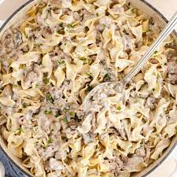

Hamburg Stroganoff

Another easy recipe that is a household staple!
Ingredients
- 1 pound ground beef
- 1 small can of mushroomm pieces
- 2 cups sour cream
- 2 cups mayo
- 4 cloves of fresh garlic
- 1 teaspoon rosemary
- 1 small onion
- 1 bag of egg noodles
- salt and pepper to taste
Steps
- Add diced onion, garlic(crushed), rosemary, and mushroom to a pan on medium heat with some olive oil. Cook until onions become translucent.
- Add beef to pan. Cook until browned.
- Add sour cream and may to pan and mix well. Let simmer while you cook the noodles.
- In a large pot, bring water to a boil and cook noodles as directed by packaging.
- Serve separate.
Return to Main Page